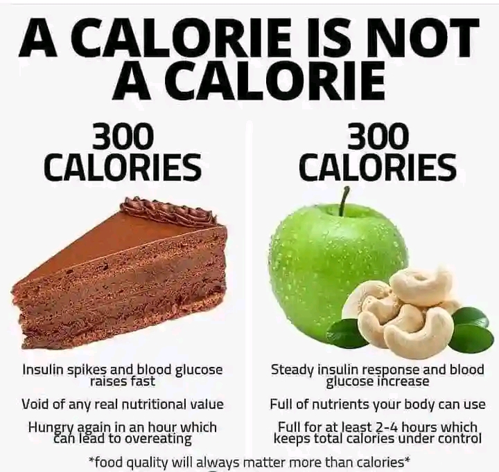

Introduction
Welcome to our ultimate guide on calories. This post will cover everything you need to know about calories, including what they are, how to calculate your daily needs, and tips for managing your calorie intake to maintain a healthy lifestyle.
What Are Calories?
Calories are units of energy that our bodies use to function. They come from the foods and beverages we consume and are essential for maintaining bodily processes, such as breathing, digestion, and physical activity.
Why Are Calories Important?
Calories are crucial because they provide the energy needed for all our body's activities. Consuming the right amount of calories helps maintain energy balance, supports metabolic functions, and aids in weight management.
Calculating Your Calorie Needs
Determining your daily calorie needs depends on several factors, including age, sex, weight, height, and physical activity level. The most common method to estimate calorie needs is using the Harris-Benedict Equation.
Harris-Benedict Equation
The Harris-Benedict Equation calculates your Basal Metabolic Rate (BMR), which is the number of calories your body needs at rest. To find your Total Daily Energy Expenditure (TDEE), multiply your BMR by your activity level.
- For men: BMR = 88.362 + (13.397 x weight in kg) + (4.799 x height in cm) - (5.677 x age in years)
- For women: BMR = 447.593 + (9.247 x weight in kg) + (3.098 x height in cm) - (4.330 x age in years)
Then, multiply your BMR by the appropriate activity factor:
- Sedentary (little or no exercise): BMR x 1.2
- Lightly active (light exercise/sports 1-3 days/week): BMR x 1.375
- Moderately active (moderate exercise/sports 3-5 days/week): BMR x 1.55
- Very active (hard exercise/sports 6-7 days a week): BMR x 1.725
- Super active (very hard exercise/sports & physical job or 2x training): BMR x 1.9
Managing Calorie Intake
1. Tracking Your Calories
Keeping a food diary or using a calorie tracking app can help you monitor your daily intake and ensure you stay within your target range.
2. Eating Nutrient-Dense Foods
Focus on consuming foods that provide a high amount of nutrients relative to their calorie content, such as fruits, vegetables, lean proteins, and whole grains.
3. Controlling Portion Sizes
Be mindful of portion sizes to avoid overeating. Using smaller plates and measuring portions can help you control your calorie intake.
4. Balancing Macronutrients
Ensure your diet includes a balance of carbohydrates, proteins, and fats to support overall health and satiety.
Sample Calorie-Controlled Meal Plan
Breakfast
Greek yogurt with honey and a handful of mixed berries.
Lunch
Quinoa salad with chickpeas, cherry tomatoes, cucumbers, and a lemon-tahini dressing.
Snack
Carrot sticks with hummus.
Dinner
Grilled chicken breast with steamed broccoli and a baked sweet potato.
Common Myths About Calories
Myth 1: All Calories Are Equal
While all calories provide energy, the source of the calories (nutrients) affects how they impact your body. For example, 100 calories from sugary snacks are not the same as 100 calories from vegetables.
Myth 2: You Need to Cut Calories Dramatically to Lose Weight
Drastically reducing calorie intake can lead to muscle loss, nutrient deficiencies, and a slower metabolism. It's better to aim for a moderate calorie deficit to lose weight gradually and sustainably.
Conclusion
Understanding calories and how they affect your body is crucial for maintaining a healthy lifestyle. By calculating your calorie needs, making informed food choices, and dispelling common myths, you can better manage your diet and achieve your health goals.